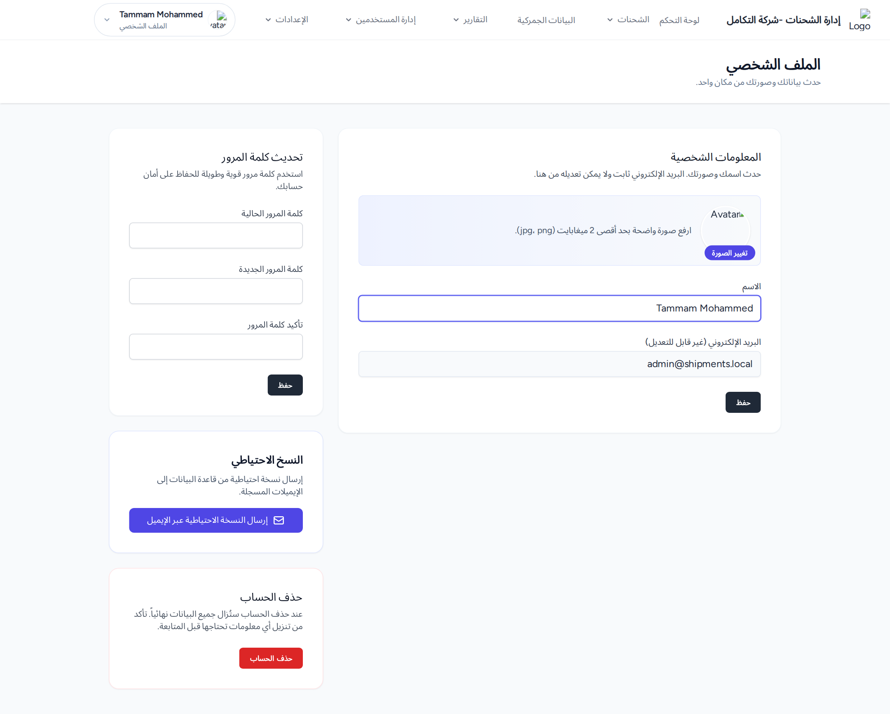

نظرة عامة

صفحة «الملف الشخصي»: المعلومات الشخصية، تحديث كلمة المرور، وأقسام إضافية.
1. المعلومات الشخصية
- لتغيير الصورة اضغط تغيير الصورة واختر صورة (jpg/png حتى 2م.ب).
- عدّل الاسم (حقل البريد الإلكتروني للعرض فقط ولا يُعدَّل من هنا).
- اضغط حفظ.
المخرجات المتوقعة: تظهر كلمة «تم الحفظ.» لثوانٍ بجانب الزر.
2. تحديث كلمة المرور
- أدخل كلمة المرور الحالية.
- أدخل كلمة المرور الجديدة ثم تأكيد كلمة المرور.
- اضغط حفظ.
المخرجات المتوقعة: تظهر كلمة «تم الحفظ.» عند نجاح التحديث.
3. النسخ الاحتياطي
لمن يملك الصلاحية، يوجد قسم النسخ الاحتياطي:
- اضغط زر إرسال النسخة الاحتياطية عبر الإيميل.
- أكّد رسالة «هل تريد إرسال النسخة الاحتياطية الآن؟».
المخرجات المتوقعة: «تم إرسال النسخة الاحتياطية بنجاح عبر البريد الإلكتروني».
4. حذف الحساب
- اضغط حذف الحساب.
- في النافذة المنبثقة أدخل كلمة المرور للتأكيد.
- اضغط حذف الحساب.
تنبيه: يُحذف الحساب نهائياً ويتم تسجيل خروجك وإعادتك إلى الصفحة الرئيسية.